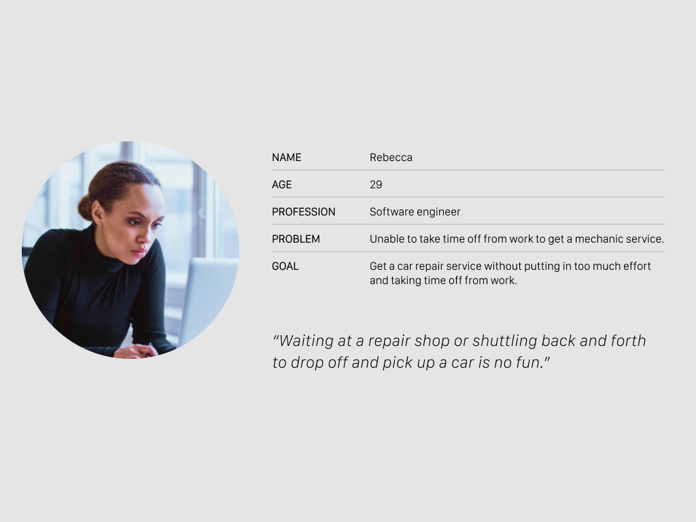
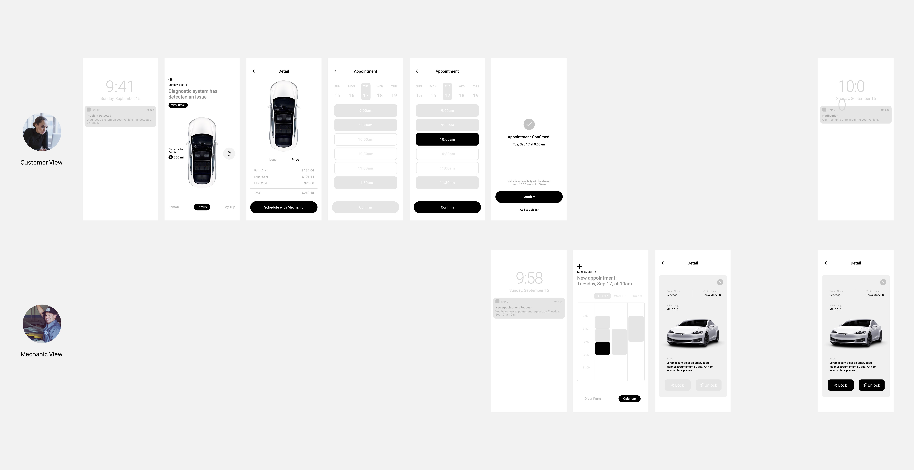
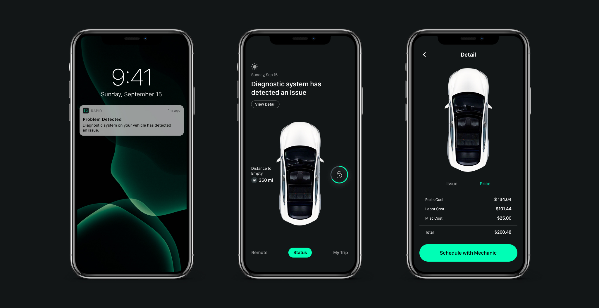
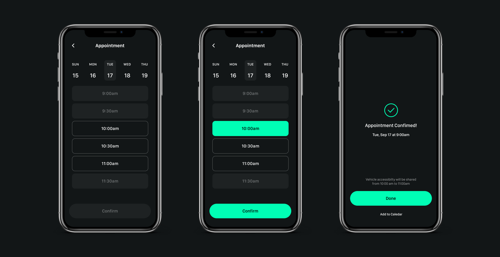
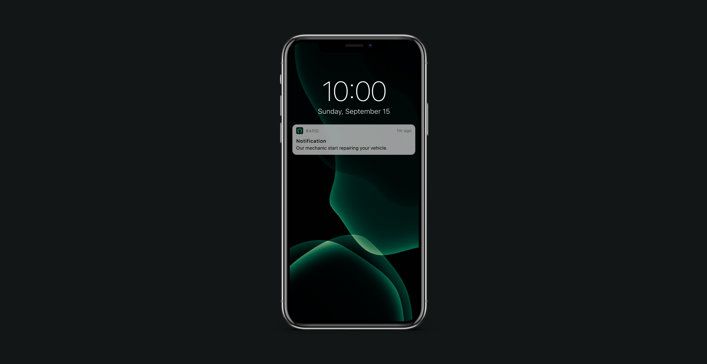
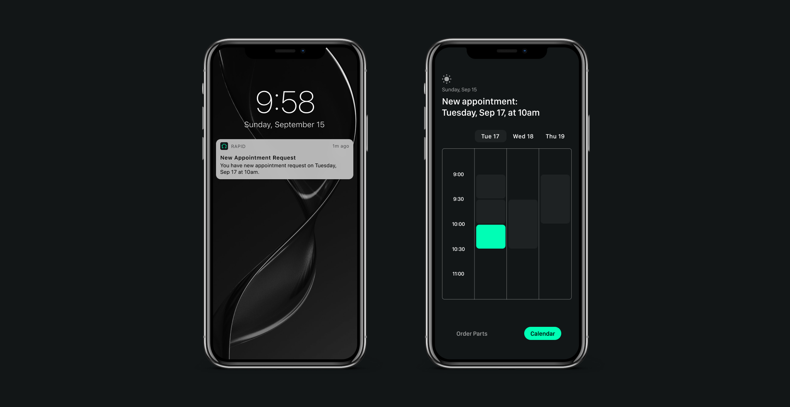
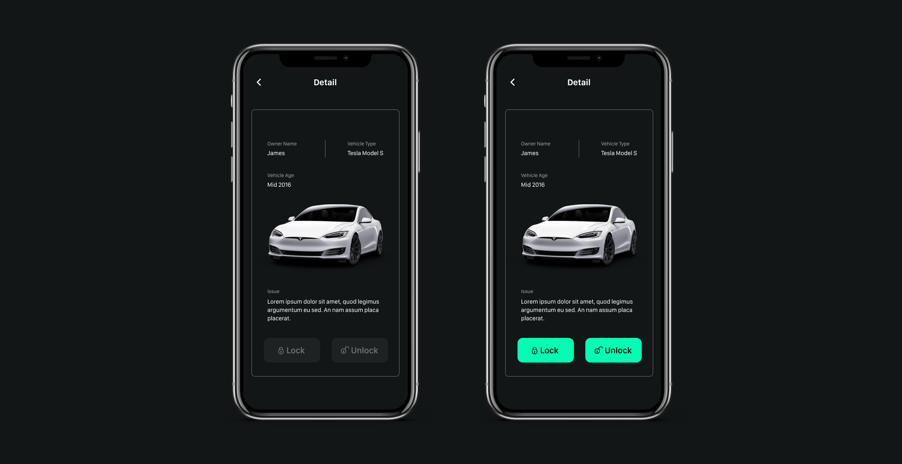

Problem
Auto repair service can be stressful, inconvenient and time consuming experience for customers.
Rapid Auto Repair Service
Auto repair service can be stressful, inconvenient and time consuming experience for customers.

Modern technology has created a trend of having what you want instantly. Now people want everything to be automated, real quick and as convenient as possible. To keep up with customers' demand and outside competition, repair shops and mechanics should offer state-of-the-art services that utilizes technology.
Rapid uses AI to anticipate car troubles, contact owners and mechanics, schedule appointments for repairs and maintenance and share vehicle acessibility when necessary. The app focuses on reducing unnecessary hassle between customer and mechanic and offers more instant and convenient mechanic experience with minimal waiting time, interaction and thought involved.

Artificial Intelligence detects car problem before it occurs and notify the owner. The car owner can see the detailed information and decide whether or not to book an appointment with the mechanic.

Should car owners wish to make repairs, they can schedule an appointment with a mechanic at the best available time.

When a mechanic troubleshoots your vehicle and starts the repair, Rapid sends you a notification which allows the car owner to monitor the repair process and progress.

When an appointment is confirmed, Rapid sends the mechanic an appointment request notification. Mechanics can see the detailed information of the vehicle by tapping the scheduled time on the calendar.

The accessibility to the car will be shared at the appointed time, provide easy access to the mechanic for pick up/ drop off or repair services.
